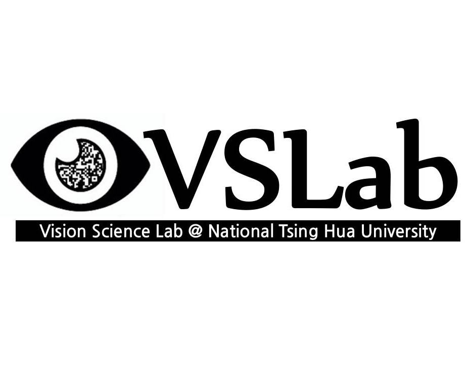
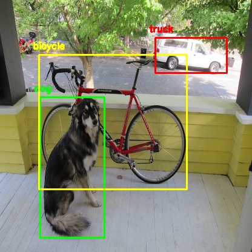

Master Student
Department of Electrical Engineering
National Tsing Hua University
Bio. I'm a first-year master student in the Department of Electrical Engineering at National Tsing Hua University (NTHU), advised by Prof. Min Sun. I also received my B.S. at this place.
I'm interested in deep learning and computer vision. Recently, my research is focused on object detection and human pose estimation. Also, I'm participating in CarePLUS.ai, an AI-assisted home care system project just presented at CES 2020 (press), as a student researcher.
M.S. in Electrical EngineeringSept. 2020 - Now
National Tsing Hua University
Hsinchu, Taiwan
Advisor: Prof. Min Sun
B.S. in Electrical EngineeringSept. 2017 - Jun. 2020
National Tsing Hua University
Hsinchu, Taiwan
GPA: 3.90/4.30 (Overall), 3.94/4.30 (Major)
Dept. of Computer Science and Information EngineeringSept. 2016 - Jun. 2017
National Central University
Taoyuan, Taiwan
Transferred to NTHU at Sept. 2017
Experience

VSLab @ NTHU, Research Assistant
Summer 2020 Hsinchu, Taiwan
Advisor: Prof. Min Sun
VSLab @ NTHU, Undergraduate Researcher
Jul. 2018 - Jun. 2019 Hsinchu, Taiwan
Advisor: Prof. Min Sun
Personal Projects

Awesome Tiny Object DetectionMar. 2019 - Now Project
A curated list of awesome papers, datasets, surveys and articles for tiny object/face/pedestrian detection. Starred by 250+ and forked by 50+ GitHub users worldwide.
A device which tracks liquid level, containing a webcam, a motor, an NVIDIA Jetson Nano and other elements. Work done during the internship at Edony A.I.
Course Projects
EE366000: Digital Signal ProcessingSpring 2020
Code (To be released) / Report
A two-stage object removing algorithm which first generates segmentation mask by filter-based method, then remove objects in images by seam carving technique.
A simple compiler implementation which targets on subset of C language and generates RISC-V assembly code. Includes lexical analyzer, syntax analyzer and code generator.